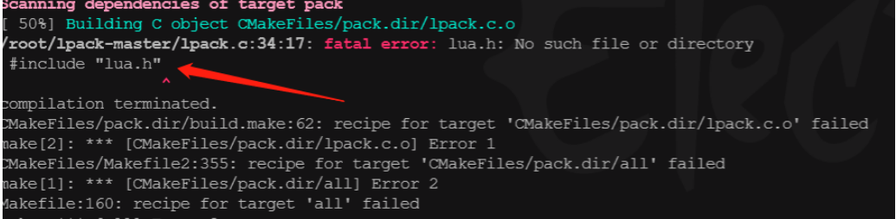
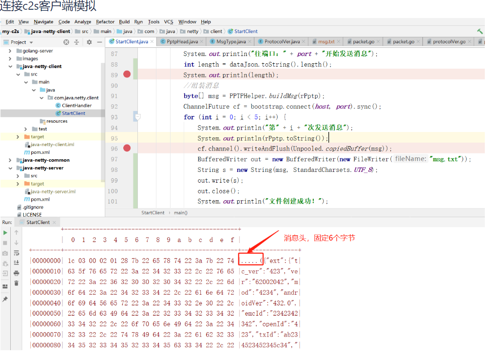

Lua Language Parsing Private Protocol Package
使用lua语言解析tcp私有协议包示例⌗
为什么需要lua来解析tcp 私有协议包？
因为lua语言生态内，有强大的openresty 技术可使用，而openresty可以提供强劲的web 并发性能，能提供tcp 长链接通道 技术
首先需要lapck包对其解析⌗
git clone https://github.com/Kong/lua-pack
或
git clone https://github.com/lilien1010/lpack
安装lapck包需要编译⌗

⌗
在编译时遇到 lua.h No such file or directory #include " lua.h" ？ 问题时，需要遇增加如下参数
-DLUA_INCLUDE_DIR=/usr/local/openresty/luajit/include/luajit-2.1/
最终编译命令如下：
#DLUA_INCLUDE_DIR 表示lua.h 存放的位置 LUA_LIBRARY指定luajit库，so文件，
cmake ./ -DLUA_INCLUDE_DIR=/usr/local/openresty/luajit/include/luajit-2.1/ -DLUA_LIBRARY=/usr/local/lib/libluajit-5.1.so
make #编译成so文件，得到pack.so
详细解析tcp私有代码如下⌗
require("pack")
local mypack = string.pack
local myunpack = string.unpack
local sock = ngx.req.socket(true)
if sock then
ngx.say("got the request socket")
else
ngx.say("failed to get the request socket: ", err)
return
end
while true do
--先尝试读取固定头 6个字节
local data, err = sock:receive(6)
--如果遇到timeout,或者close的情况，则break 本次循环读取，继续下一条读取
if err=='timeout' or err =='close' then
break
end
--按pmtp协议读取返回的参数，type1为消息类型，ver2为pmtp协议版本号，time待命时间，len4为消息体的长度，不包含头的长度
--默认字节顺序为 大端，>ccHH
local succ,succLen,type1,Ver2,Time3,Len4 = pcall(myunpack,data,">ccHH")
--读取剩余的消息体长度内容
local body, err = sock:receive(Len4)
--如果读取body为空，则退出
if body == nil then
break
end
--打印body消息内容
ngx.log(ngx.ERR, "------bdy ", body)
end
通过客户端链接后发送tcp私有协议包的一模拟效果
